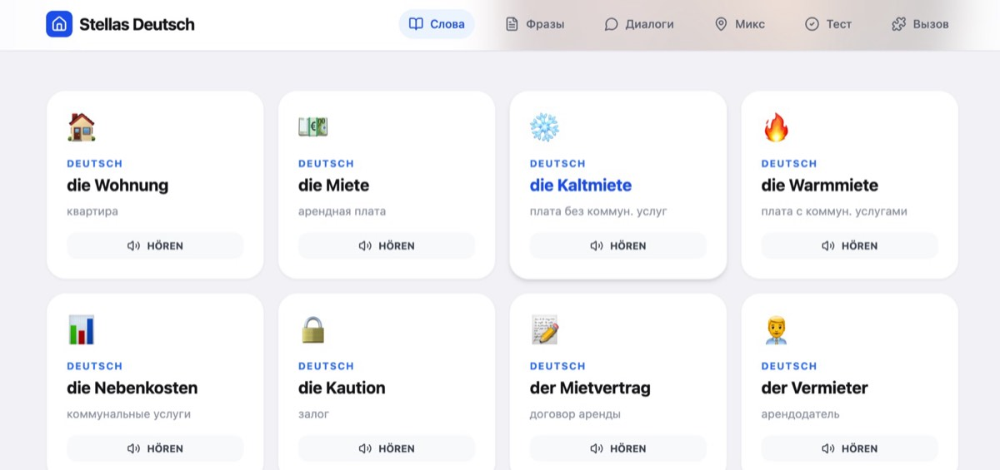
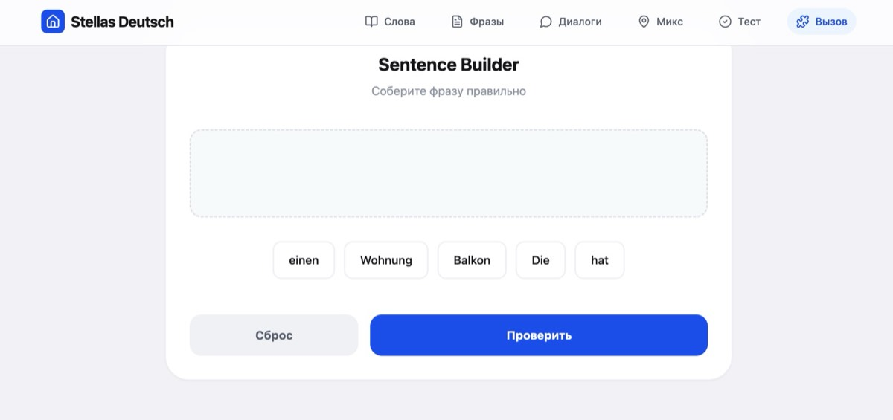
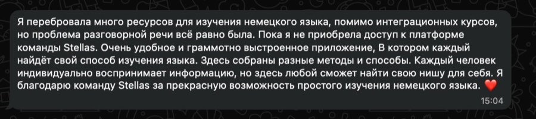

Немецкий
можно
не зубрить
Половину незнакомых слов в немецком не надо учить. Их надо уметь разобрать на детали. Сегодня разбираем приставки и суффиксы — механизм, который превращает 500 знакомых корней в три тысячи понятных слов.
Бесплатно, без регистрации и смс. Правда.
Сначала про больное
Дело не в том,
что вы неспособный
Я живу в Вене. И каждый день читаю одно и то же — в чатах, в комментариях, в личке. Не от лентяев. От людей, которые пашут в три смены, тащат детей и всё равно садятся за учебник.
«Я почти всё понимаю, что говорят. А когда пытаюсь сказать — в голове каша».
из комментариев«Зная кучу слов, перевод выходит как Wörter Salat. А в обратную сторону вообще фиг построишь».
из комментариев«Артикли. Мой личный ужасный ужас».
из комментариев«Есть и литература, и интернет. Нет только плана реализации».
из комментариевЗнаете, что общего у всех четверых?
Никто из них не учил язык как систему. Все учили его как список. Список слов, список правил, список исключений. А список — это память. Память кончается ровно в тот момент, когда вы устали, испугались или вас перебили.
Система не кончается.
Немецкий — язык, который собирается из деталей, как мебель. Detали конечны. Их можно пересчитать. И вот с этого места уже интересно.
01 · Анатомия
Из чего
сделано слово
Возьмём слово, от которого новичка обычно потряхивает. die Unfreundlichkeit. Двадцать букв. Выглядит как приговор.
А теперь смотрите.
Freund — друг (знаете с A1) · -lich — делает прилагательное: дружелюбный · un- — переворачивает в минус: недружелюбный · -keit — делает существительное женского рода: недружелюбность.
Вы не учили это слово. Вы его прочитали.
И теперь смотрите, что даёт один-единственный корень, который вы уже знаете:
Один корень. Шесть слов. Ноль зубрёжки.
Ровно так же собираются десятки тысяч немецких слов. Не сотни — десятки тысяч. И деталей, из которых их собирают, до неприличия мало.
Четыре способа собрать слово
В немецком их всего четыре, и три из них вы уже интуитивно знаете:
Почему это важнее, чем кажется
Суффикс — это не украшение. Суффикс сообщает вам три вещи сразу: часть речи, род существительного и примерное значение.
То есть тот самый «ужасный ужас» с артиклями во многих случаях решается не памятью, а концом слова. Всё, что оканчивается на -heit, -keit, -ung, -schaft — всегда die. Без исключений, которые вам стоило бы запоминать сегодня.
02 · Артикли
Артикль спрятан
в конце слова
«Артикли — мой личный ужасный ужас» — самый частый комментарий, который я вижу. Так вот, к половине существительных артикль вообще не надо угадывать. Он написан прямо в слове.
Это не таблица для зубрёжки. Это цветовая подсказка: увидели конец слова — знаете артикль. Девятнадцать окончаний закрывают огромный кусок немецких существительных, включая почти всю канцелярскую лексику, с которой вы столкнётесь в Amt.
Ужасный ужас сдулся до девятнадцати строчек.
03 · Математика
Считаем,
сколько это даёт
Я не люблю красивые обещания, поэтому давайте просто арифметику.
Столько длинных слов читается по частямЕсли вы знаете 20 суффиксов и 10 приставок, подавляющее большинство «страшных» немецких слов перестают быть незнакомыми. Вы их не переводите — вы их разбираете.
Как обычно
Список
8 → 8Восемь слов — восемь отдельных усилий памяти. Забыли одно — потеряли одно. Забыли всё — начали заново.
Как надо
Система
1 → 8Один корень и правило. Забыли слово — собрали заново прямо в разговоре. Память тут почти не участвует.
слов из 500 корней
Один вечер на схему. И словарь перестаёт расти линейно.
Это, собственно, единственная причина, по которой я вообще сел писать этот разбор.
04 · Справочник
Все детали
на одной странице
Жмите на любую — внутри примеры с переводом. Не пытайтесь выучить всё за раз, это бессмысленно. Прочитайте, поймайте логику, возвращайтесь.
05 · Практика
Соберите
слово сами
Выберите приставку, корень и суффикс. Некоторые комбинации не существуют — так и должно быть, и это тоже полезно увидеть своими глазами.
06 · Komposita
Длинные слова —
это простые слова
Сложные существительные пугают только на вид. Правило ровно одно, и оно спасает вам артикль.
главный железнодорожный вокзал
= der Reiseführer — путеводитель. Род, множественное число и склонение берутся у последнего слова. Всегда.
= die Universitätsbibliothek. Соединительная -s- появляется после женских слов на -ät, -heit, -keit, -schaft, -ung и после некоторых мужских вроде Beruf, Unterricht.
Два слова
die Tomatensuppe
томатный суп
Три слова
der Hauptbahnhof
главный вокзал
Четыре слова
der Schwarzweißfernseher
чёрно-белый телевизор
Читайте такие слова с конца. Немцы, кстати, делают так же.
07 · Проверка
Шесть вопросов,
две минуты
Если наберёте меньше четырёх — это не приговор, а просто повод перечитать блок 04. Знание ≠ навык, помните.
…
Честно про то, что дальше
Одна тема —
это одна тема
Вы дочитали разбор словообразования. Стало понятнее. Но давайте без иллюзий: от одного понятного объяснения немецкий не появляется.
Появляется он от того, что таких понятных объяснений у вас триста сорок, они разложены по уровням, к каждому есть видео и упражнение, а рядом лежат слова с озвучкой и трекер, который не даёт слиться на второй неделе.
Проблема почти никогда не в отсутствии информации.
Информации в интернете завались. Проблема — что она размазана по сорока сайтам, ютюбу и трём тетрадкам, и у вас нет плана. Вот это мы и собрали.
08 · Платформа
Stellas Deutsch
A0 → C1
Это не курс с созвонами в неудобное время и домашками «чтобы было». Это база знаний в Notion, которую вы открываете тогда, когда у вас есть силы. В том числе офлайн, в метро, в ночную смену.





Что это решает по пунктам
09 · Отзывы
Скриншоты,
а не пересказ
Не буду цитировать выборочно и красиво. Вот как есть, из личных сообщений.




← листайте →
10 · Тарифы
Цена, которую
не надо обдумывать
Мы сознательно не делаем продукт за 500 евро с рассрочкой от банка. Тут нет обратной связи — поэтому и цена такая. Это честный размен, а не аттракцион щедрости.
Старт
- Гайды по грамматике с видео и упражнениями
- Лексика по бытовым ситуациям
- Слова с озвучкой и транскрипцией
- Трекер, флеш-карты, диалоги
- Фильмы, книги, подкасты по уровню
Полный
- Обе платформы целиком, все 340+ гайдов
- 7 500+ слов с озвучкой и транскрипцией
- Экзамены, диалоги, упражнения с разбором
- Умный трекер в Notion + флеш-карты
- Украинская версия A0–A2 в подарок
- Доступ навсегда, обновления включены
Продолжение
- Грамматика уровней B1–C1 с видео
- Продвинутая лексика и разговорные фразы
- Материалы для подготовки к экзаменам
- Фильмы, книги, подкасты по уровню
- Трекер, флеш-карты, диалоги
Платите один раз. Доступ не сгорает, подписки нет, продлевать нечего.
11 · Вопросы
Что спрашивают
чаще всего
Начните
с одного вечера
Откройте платформу, найдите тему, которая бесит вас больше всего, и закройте её сегодня. Завтра — следующую. Это вся стратегия.
Забрать платформуЯ не обещаю вам B1 за три месяца — так не бывает, и все, кто обещает, вам врут. Обещаю понятные объяснения и систему, в которой не теряешься.